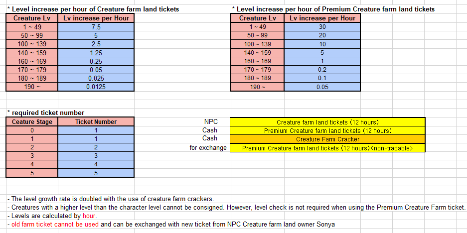

Here you can find details about the changes introduced to the Pet Farm on 21/07/2020.

As an example, a 190+ pet which is placed in the farm for 12 hours with the basic pass will gain 15%.
If using the Premium Pass it will gain 60%.
Using a Creature Farm Cracker will increase the exp earned by 100%.